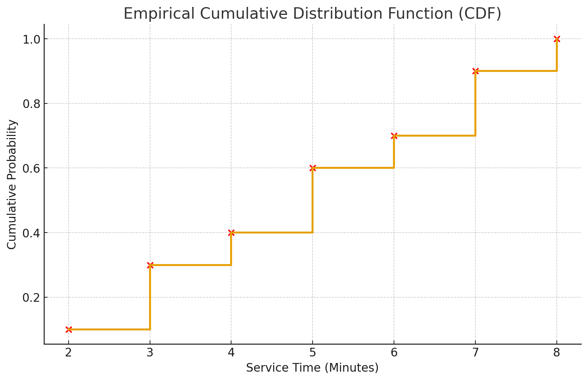

SW-224: Simulation & Modelling
Course Syllabus & Teaching Plan
| S# | Topic |
|---|---|
| 1 | Introduction, Simulation, System, System Model, Purposes of Simulation |
| 2 | Advantages and Disadvantages of Simulation |
| 3 | Types of Simulation Models |
| 4 | Classification of Simulation Software |
| 5 | Simulation of a Single-Server Queuing System |
| 6 | Simulation of Two Server Queue System |
| 7 | Simulation of an Inventory System |
| 8 | Simulation of Newspaper Seller |
| 9 | Simulation of the Reliability Problem |
| 10 | Discrete Statistical Models in Simulation |
| 11 | Continuous Statistical Models in Simulation |
| 12 | Empirical Distributions |
| 13 | Random Variables and Their Properties |
| 14 | Random Number Generation |
| 15 | Tests for Random Numbers |
| 16 | Event Scheduling / Time Advance Algorithm |
| 17 | Simulation of Dump Truck Problem |
| 18 | Simulating Basic Probability Scenarios |
| 19 | Simulating Conditional Probabilities, Means, and Variances |
| 20 | The Computation of Definite Integrals |
| 21 | Simulating Queuing Problem |
| 22 | Simulating Closed Networks of Queues |
| 23 | The Machine Repairman Problem |
Topic: Introduction
In the world of Software Engineering, decisions often have to be made before a system is fully built. Wether designing a new algorithm, predicting system performance or testing a network protocol. Simulation and Modeling plays a crucial role.
Why?
Because building a real system may be costly, time consuming, or even impossible at early stages. Therefore we first model the system and simulate its behaviour.
What is Simulation?
The imitation of the operations of a real world scenario to analyze the results for an informed decision. A simulation involves:
- Creating a model (mathematical, logical, or computational).
- Running Experiments on the model to observe behaviour.
- Analyzing results to make informed decisions.
Example: Simulating traffic flow to test a smart traffic light system
What is a System?
A collection of interrelated components working together to complete a specific task.

It can be:
- Physical (Manufacturing System, Project Management)
- Abstract (Operating System, Cloud Services, Payment Gateways)
Characteristics:
- Inputs and Outputs
- Boundaries
- Interconnected components
- Structure and behaviour over time
Example: An e-commerce platform.
What is a System Model?
A simplified representation of a real world system. It helps to understand, design, and analyze the system without physically building it.
- Mathematical models (equations and formulae)
- Logical Models (flowcharts, state machines)
- Computational models (to analyze system behaviour)
Example: Modeling load on a server to test how it handles 1000+ users.
Purpose of Simulation
- Performance Evaluation
- Cost Reduction
- Risk Analysis
- Design Improvement
- Decision Support
Example: Simulating a distributed system under heavy network delay to improve load balancing strategies
Topic: Advantages & Disadvantages of Simulation
The Advantages of Simulation
1. Cost-Effective
Simulation allows testing ideas and systems without the high cost of physical prototypes or live testing such as simulating an air traffic control system without needing real flights.
2. Risk-Free Testing
Dangerous or high-risk scenarios (e.g., nuclear plant failures, military combat) can be safely modeled and tested.
3. Time Compression
Long-term scenarios can be studied in a shorter real-world time. Such as simulating 10 years of climate impact in a few minutes.
4. Flexibility and Repeatability
The same scenario can be run multiple times with different parameters or random seeds to analyze variability and consistency.
5. Insight into Complex Systems
Helps in understanding how systems behave over time, especially for dynamic, non-linear, or stochastic systems.
6. Supports Decision-Making
Assists engineers, managers, and policymakers in comparing different strategies or configurations.
The Disadvantages of Simulation
1. Model Validity and Accuracy
A simulation is only as good as its model. If the assumptions or inputs are incorrect, results may be misleading.
2. High Initial Development Cost
Building an accurate, detailed model can be time-consuming and expensive.
3. Complexity
Simulations may involve complex mathematical modeling, making them difficult to understand or use.
4. Interpretation Challenges
Simulation outputs often involve large amounts of data. Extracting meaningful insights may require specialized knowledge.
5. Not a Substitute for Real Data
While useful, simulations can't completely replace real-world testing and validation.
Topic: Types of Simulation / System Models
Simulations can be broadly classified into Four main types
1. Static Simulation Models
Models the system as a sequence of distinct events occurring at specific times. Also known as Discrete Event Simulation (DES). Used in systems where changes occur at discrete points.
Example: Bank customer service queue, manufacturing processes, network packets etc
2. Continuous / Dynamic Simulation Models
Models systems that change continuously over time, usually described by differential equations. Used in physical processes such as temperature change, fluid flow
Example: Simulating the temperature of a furnace or chemical reactor, Fluid dynamics, population growth models etc
3. Deterministic Simulation Models
Models individual entities (agents) and their interactions within a system. Contains no random variables and and have a known set of inputs which will result in a unique set of outputs
Example: Manufacturing process, traffic flow on one lane road.
4. Stochastic Simulation Models
Uses random sampling to simulate uncertain systems, processes and obtain numerical results, often for risk analysis or optimization. Also known as Monte Carlo Simulation. Used in risk analysis, financial modeling, reliability testing.
Example: Financial forecasting, project management.
Class Activity (optional):
Think of a real-world system in software engineering (e.g., a cloud server load balancer or a ride-sharing algorithm). What type of simulation would best model that system and why.
Topic: Classification of Simulation Softwares
Simulation software is a computer-based tool that allows users to model, analyze, and visualize the behavior of systems over time. It provides an environment to imitate real-world processes, often through mathematical modeling.
Simulation softwares can be classified into different categories based on the purpose of simulation
1. General-Purpose Simulation Software
Designed to simulate a wide range of systems, not limited to any specific field.
Features:
- Flexible modeling capabilities
- Support for various simulation types (discrete, continuous, stochastic)
- Extensive libraries and toolkits
Examples: Arena, Simul8, FlexSim
Used in: Manufacturing, Logistics, Healthcare etc
2. Special-Purpose Simulation Software
Tailored to simulate specific types of systems or domains.
Features:
- Easier to use for targeted applications
- Limited flexibility beyond domain
Examples:
- OPNET / Riverbed — network simulation
- AutoMod — material handling and logistics
- MATPOWER — power systems simulation
Used in: Telecom networks, transportation systems, energy systems etc
3. Language-based Simulation Libraries / Software
Languages or libraries used to build custom simulation models from scratch.
Features:
- Full control over model logic
- Suitable for complex, custom scenarios
Examples:
- GPSS — blocks based
- SimPy — python based
- CSIM, DEVS, AnyLogic — java based
Used in: Research, academic settings, custom simulations etc
4. Real-time Simulation Softwares
Simulates systems in real-time, often with hardware-in-the-loop.
Features:
- Time-synchronized execution
- Often used with physical systems or embedded hardware
Examples:
- MATLAB/Simulink with Real-Time Workshop
- dSPACE
Used in: Automotive systems, robotics, aerospace
Topic: Simulation of one Server Queue System
What is a Single Server Queuing System?
A Single Server Queuing System is one of the simplest and most fundamental queuing models. It consists of:
- One server
- One queue (FIFO - First In, First Out)
- Customers (or entities) arriving at intervals
- Service time per customer
Components of a Single Server Queue:
- Arrival Process: Customers arrive randomly (e.g., every 5 minutes)
- Queue: Waiting area if the server is busy.
- Server: Provides service to customers one by one.
- Service Time: Fixed or random time taken to serve each customer.
- Exit: Customers leave after being served.
Simulation Example Using GPSS
Simulate a bank counter where:
- One clerk serves customers
- Customers arrive every 6 minutes
- Each customer is served in 4 minutes
- Simulate for 10 customers
GPSS Code Example:
SIMULATE
GENERATE 6 ; Inter-arrival time of 6 minutes
QUEUE LINE ; Join the queue if the server is busy
SEIZE CLERK ; Try to seize the server
DEPART LINE ; Leave the queue after seizing the server
ADVANCE 4 ; Service time is 4 minutes
RELEASE CLERK ; Release the server after service
TERMINATE 1 ; Customer exits the system
START 10 ; Run simulation for 10 customers
If you do not know GPSS commands and their use, check the Basics of GPSS Simulation Software
Basics of GPSS Simulation Software
What is GPSS?
GPSS (General Purpose Simulation System) is a discrete event simulation language used to model complex systems. It allows users to create simulation models using blocks and commands.
Key Components of GPSS:
- Blocks: Basic building blocks of a GPSS model, representing different components of the system.
- Commands: Instructions that define the behavior of the blocks.
- Simulation Control: Commands to start and control the simulation.
- Statistics Collection: GPSS can collect statistics such as average wait time, service time, and queue length which are shown as results.
Commands:
GPSS has commands in pairs such as GENERATE & TERMINATE, QUEUE & DEPART, SEIZE & RELEASE etc.
Entity Control Commands
GENERATE A,B,C,D,E,F,G,H,I
- A is mean time of next generation
- B is generation time modifier
- C is offset start time of generation
- D is total number of entities to be generated
- E is initial priority of transaction
- F through I specifies number of parameters
Example: GENERATE 4,1,0,10,0
It means generate 10 entities with a mean time of 4 minutes and a modifier of 1 minute.
TERMINATE A
- A is the number of entities to be removed from the simulation.
- TERMINATE 1 means one entity is removed from the simulation.
- TERMINATE 0 means no entity is removed, but the start counter is decremented by 1.
- The simulation will end only when the start counter becomes 0
Example: TERMINATE 1
It means one entity is removed from the simulation and the start counter is decremented by 1.
Queuing Commands
QUEUE A
A is the name of the queue where the entity will wait if the server is busy.
Example: QUEUE LINE
It means the entity will join the queue named "LINE".
DEPART A
A is the name of the queue from which the entity will depart after seizing the server.
Example: DEPART LINE
It means the entity will leave the queue named "LINE" after seizing the server.
FACILITY/SERVER Commands
SEIZE A
A is the name of the server or facility that the entity will try to seize.
Example: SEIZE CLERK
It means the entity will try to seize the server named "CLERK".
RELEASE A
A is the name of the server or facility that the entity will release after service.
Example: RELEASE CLERK
It means the entity will release the server named "CLERK".
TIME Control Commands
ADVANCE A,B
A is the mean time the entity will spend in the advance block, and B is the time modifier.
Example: ADVANCE 4,3
It means the entity will spend between 1 to 7 minutes in the advance block (4 + random(0,3)).
RESET and CLEAR
RESET is used when you want to restart the execution of a model while retaining all entities in queue, facilities, and storages. CLEAR is used when you want to restart the execution of a model while clearing the entities, facilities, and storages to 0.
Example: RESET
It will keep the entities in the queue.
CLEAR
will remove all entities and reset the simulation.Simulation Control Commands
SIMULATE
Used to start the simulation. If you do not use SIMULATE, your program will compile but it will not execute.
Example: SIMULATE
This will start the simulation process.
START A,B
A is the termination counter that is decremented when a transaction enters the terminate block, and B is used by writing NP when you do not want to show output after the end of simulation.
Example: START 250
It means the simulation will end after serving 250 customers or entities.
Example: Drive-thru Simulation
- Customer arrival rate from 3 to 5 minutes
- Time required to drive from main entrance to Drive-thru window: 1 minute
- Order processing rate from 1 to 7 minutes per customer
- Length of simulation: 250 customers
GPSS Code:
SIMULATE; start the simulation
GENERATE 4,1
ADVANCE 1
SEIZE WINDOW
ADVANCE 4,3
RELEASE WINDOW
TERMINATE 1
START 250
Topic: Simulation of Two-Server Queue System
What is a Two-Server Queue System?
A Two-Server Queue System is a service system where:
- One common queue.
- Two servers to serve arriving customers.
- Queue Discipline is FIFO (First-In-First-Out)
Real-Life Examples
- Two cashiers at a supermarket counter
- Two doctors in a clinic seeing patients from a single waiting area
- Two printers handling print jobs in a computer lab
System Behaviour
- A customer arrives at the queue.
- If at least one server is free, the customer is served immediately.
- If both servers are busy, the customer waits in the queue.
- Once a server is free, the next customer in the queue is served.
Simulation Example
Simulate a two-server Bank queue system where:
- Number of Tellers: 2 for first 8 hours and 3 for next 8 hours.
- Customer Arrival Rate: 1 to 3 minute.
- Teller processing rate: 1 to 7 minutes.
- Time required to enter queue: 1 minute.
- Termination Condition: 16 hours.
In GPSS, both servers can be managed using the same facility name with multiple units, e.g., a facility with capacity 2.
SIMULATE
GENERATE 2,1
ADVANCE 1
QUEUE DESK
ENTER TELRS
DEPART DESK
ADVANCE 4,3
LEAVE TELRS
TERMINATE 0
*Timing Section *
GENERATE 480
TERMINATE 1
*Define Section *
TELRS STORAGE 2
*Control Section *
START 1
Topic: Simulation of an Inventory Management System
What is an Inventory Management System
An Inventory System manages the stock (raw materials, components, or finished goods) that a company holds for future use or sale. The main goal is to balance between:
- Too much inventory (leads to high holding costs)
- Too little inventory (causes stockouts and lost sales)
Simulation helps in modeling these systems and analyzing performance under different scenarios.
Components of an Inventory System
- Reorder Point (ROP): The inventory level that triggers a new order.
- Order Quantity (Q): The amount of inventory ordered when the reorder point is reached.
- Lead Time: The time between placing an order and receiving the inventory.
- Demand Pattern: The rate at which inventory is consumed or sold.
- Holding Costs: Costs associated with storing unsold inventory.
- Stockouts: Situations where demand cannot be met due to insufficient inventory.
How Inventory Simulation Works
Simulation replicates daily or weekly inventory operations using the following logic:
- Start with initial inventory.
- Subtract daily demand.
- Check if current inventory ≤ ROP → place order.
- If order is already placed, check lead time → receive items.
- Repeat over a defined time horizon (e.g., 30 days).
- Track key metrics: total shortages, average inventory, ordering cost.
Simulation Example with Arena Simulation Software
Create a Inventory Management System with Arena
Topic: Discrete Statistical Models
What are Discrete Statistical Models?
Models that help simulate systems where events occur at distinct points in time. They involve random integer variables.
Why we use Discrete Statistical Models? (Importance of DSM)
- Real-world systems involve randomness.
- Introduces realism by modeling uncertainty.
- Helps in probabilistic decision-making.
- Forms the basis of discrete-event simulation where randomness drives system behavior.
Common Distributions in Discrete Statistical Models
Bernoulli Distribution: Models an experiment with two outcomes: success (1) or failure (0).
Examples: A machine works (success) or fails (failure) on a given day. Modeling yes/no outcomes like machine up/down.
Binomial Distribution: Models the number of successes in a fixed number of independent Bernoulli trials.
Examples: Number of defective items in a batch of 100. Number of successful transactions out of 50 attempts.
Geometric Distribution: Models the number of trials until the first success in a series of independent Bernoulli trials.
Examples: Number of coin flips until the first heads. Number of customer calls until the first sale.
Poisson Distribution: Models the number of events occurring in a fixed interval of time or space, given a known average rate.
Examples: Number of customer arrivals at a service center in an hour. Number of emails received in a day.
Discrete Uniform Distribution: Models the number of outcomes in which each value in a finite set has equal probability.
Examples: Rolling a fair die (values 1 to 6, equally likely). Simulating random selection or fair games.
Topic: Continuous Statistical Models in Simulation
What are Continuous Statistical Models
Models that introduce random variables in a simulation that can take any value within a range (not just integers).
Examples:
- The time between arrivals at a bus stop (e.g., 1.2 hours)
- Temperature readings (e.g., 36.6°C)
- Height of individuals (e.g., 5.9 feet)
- Many real-world phenomena are continuous in nature.
- Provides a more accurate representation of systems where values can vary smoothly.
- Helps in modeling time, distance, and other continuous variables.
- Essential for simulations involving physical processes, finance, and natural phenomena.
- Widely used in Stochastic Simulations.
Why we use Continuous Statistical Models? (Importance of CSM)
Common Continuous Statistical Models
Uniform Distribution: Every value in a range [a, b] is equally likely.
Example: Random number generation, Rolling a fair die. Each number (1 to 6) has the same chance.
Normal (Gaussian) Distribution: Bell-shaped curve defined by mean (μ) and standard deviation (σ).
Example: Heights of people, Test scores. Most values cluster around the mean.
Exponential Distribution: Models time between events in a Poisson process.
Example: Time between arrivals at a service center, Lifespan of electronic components.
Log-Normal Distribution: Used when the logarithm of the variable is normally distributed.
Example: Stock prices, Income distribution. Values are positively skewed.
Triangular Distribution: Defined by minimum, maximum, and most likely value.
Example: Project completion time, homework/task time.
Topic: Empirical Distributions
What are Empirical Distributions?
Empirical distributions are probability distributions derived from observed data rather than theoretical models.
They represent the actual distribution of data points collected from real-world observations or experiments.
When no theoretical distribution seems appropriate -> Empirical data
Why we use Empirical Distributions? (Importance of ED)
Empirical distributions are used when it is impossible or unnecessary to establish that a random variable has any particular parametric distribution.
- Reflects real-world variability and patterns.
- Useful when theoretical distributions do not fit the data well.
- Helps in understanding the underlying characteristics of the data.
- Essential for data-driven decision-making and analysis.
- Advantage: no assumption beyond the observed values in the sample.
- Disadvantage: sample might not cover the entire range of possible values.
How to Create Empirical Distributions
- Collect Data: Gather a sufficient amount of data relevant to the variable of interest.
- Sort Data: Arrange the data points in ascending order.
- Calculate Frequencies: Determine how often each value or range of values occurs.
- Construct CDF: Create a cumulative distribution function (CDF) by calculating the cumulative frequencies.
- Visualize: Plot the empirical distribution using histograms or CDF plots.
How to create a Cumulative Distribution Function (CDF)
To create a CDF from empirical data:
- Sort the data in ascending order.
- Calculate the cumulative frequency for each unique value.
- Divide the cumulative frequency by the total number of observations to get the cumulative probability.
- Plot the unique values on the x-axis and their corresponding cumulative probabilities on the y-axis.
Example of Empirical Distribution
Consider the following observed data points representing the time (in minutes) taken by customers to be served at a counter:
2, 3, 5, 7, 3, 4, 6, 8, 5, 7
Sorted Data: 2, 3, 3, 4, 5, 5, 6, 7, 7, 8
Cumulative Frequencies:
- 2: 1 time
- 3: 3 times
- 4: 4 times
- 5: 6 times
- 6: 7 times
- 7: 9 times
- 8: 10 times
Total Observations: 10
Cumulative Probabilities: It is obtained by cumulative frequency divided by the total number of observations (10).
P(X≤x) = (Cumulative Frequency at x) ÷ (Total Observations)
- 2: 0.1
- 3: 0.3
- 4: 0.4
- 5: 0.6
- 6: 0.7
- 7: 0.9
- 8: 1.0
The CDF can be plotted using these values.
| Value (Minutes) | Cumulative Frequency | Cumulative Probability |
|---|---|---|
| 2 | 1 | 0.1 |
| 3 | 3 | 0.3 |
| 4 | 4 | 0.4 |
| 5 | 6 | 0.6 |
| 6 | 7 | 0.7 |
| 7 | 9 | 0.9 |
| 8 | 10 | 1.0 |
Below is the Empirical Cumulative Distribution Function (CDF) plot for the observed data. The red dots represent the cumulative probabilities at each observed value, and the step line shows how the probability accumulates.

This table and graph represent the empirical distribution of service times based on the observed data.
Applications of Empirical Distributions
- Quality Control: Analyzing defect rates in manufacturing processes.
- Risk Management: Assessing financial risks based on historical data.
- Healthcare: Studying patient outcomes and treatment effectiveness.
- Marketing: Understanding customer behavior and preferences.
Sessional Marks
Embedded spreadsheet for Sessional Marks will be placed here.